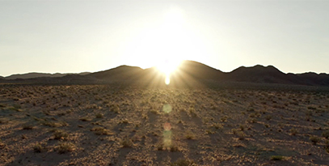

Planting Seeds for a Greener Future: Why Sustainability Should Be a Priority in a Post-COVID-19 World
In planning the coronavirus pandemic recovery,
there is “a profound opportunity” to steer the world
on “a path that tackles climate change, protects the environment,
reverses biodiversity loss, and ensures the long-term health and
security of humankind.”
– António Guterres, U.N. Secretary-General
In just a few short months, the coronavirus pandemic has caused immeasurable hardship, and brought so many aspects of our lives to a screeching halt.
Amid the darkness, however, there have been glimmers of hope. Lockdowns to contain the spread of COVID-19 have given wildlife and the environment a rare chance to breathe. Quieter streets have offered animals room to stretch their limbs, and drastic reductions in greenhouse gas (GHG) emissions have meant cleaner air in cities around the world.


Energy-Related CO2 Emissions
Source: International Energy Agency
Based on IEA data from the IEA (2020) Annual change in global energy-related CO2 emissions, 1900-2020, https://www.iea.org/data-and-statistics/charts/annual-change-in-global-energy-related-co2-emissions-1900-2020. All rights reserved; as modified by Hanwha.
By the end of the year, experts predict that COVID-19 containment measures will have prevented as much as 2.6 gigatons (2.6 billion metric tons) of carbon dioxide from reaching the atmosphere. When all is said and done, what we’re experiencing now may go down as a watershed moment in the fight against climate change. The moment when nations around the world committed to accelerating their adoption of carbon-free energy sources, to build a brighter future for the next generation.
With that said, here are three key areas of focus that could help make the post-COVID-19 world a more sustainable place.
A large-scale transition to renewable energy has been long predicted but slow to materialize. That is, until this year.
This year, for the first time ever, renewable energy sources have produced more electricity in the U.K. and Germany than any other form of power generation, and the U.S. is on track to produce more electricity from renewable energy than from burning coal. COVID-19 lockdowns have added more momentum to the green energy transition by giving the world a glimpse of the kind of future we can create by reducing our reliance on fossil fuels and increasing our investment in carbon-free alternatives.
It seems that with each passing day, more and more people are realizing the need to invest in renewable energy sources sooner rather than later. COVID-19 recovery efforts offer an opportunity to do just that, as surveys show that 75% of Americans are in favor of prioritizing clean energy over fossil fuels in COVID-19 stimulus packages. Fast-tracking renewable energy investment now could pay dividends down the road.
Just how much of a factor could renewable energy sources like solar and onshore wind play in powering the cities and industries of tomorrow? A recent study from Finland’s LUT University concluded that a 100% renewable power sector is feasible by the year 2050, with solar PV accounting for a whopping 69% of all energy consumption.
These clean, green energy sources become all the more attractive when you factor in their decreasing LCOE (levelized cost of energy). New findings from the International Renewable Energy Agency (IRENA) illustrate just how affordable both solar PV and onshore wind have become, describing the technologies as “frequently less expensive than any fossil-fuel option, without financial assistance.”
The absence of fuel-burning vehicles and busy streets has been a breath of fresh air for some of the world’s most polluted cities. Clearer roads have yielded clearer skies, and underlined a need for cities to make mobility greener.
One way to achieve this is through large-scale investment in electric vehicles (EVs). The benefits of EVs abound, and commuters’ enthusiasm for eco-friendly transportation continues to grow.
Before COVID-19, the global market for passenger EVs was projected to reach 8.5 million units in 2025, 26 million in 2030, and 54 million by 2040. In fact, by that year, experts predict that over half of all passenger vehicles sold will be electric.
COVID-19 recovery efforts could ultimately result in scores of EVs finding their way onto a road near you much sooner than anticipated. As mentioned earlier, enthusiasm for EVs continues to increase, and if sales figures are any indication, COVID-19 lockdowns may be driving interest in some countries even higher. According to figures from the International Energy Agency (IEA), in the first four months of 2020, sales of EVs in the four largest European car markets combined reached more than 145,000 units – roughly 90% more than the same period last year.
In addition, as nations begin to chart a path toward recovery from the worst economic crisis on record, many are exploring ways to boost the economy by restructuring key infrastructure and rethinking how cities work. This has led countries like China to earmark stimulus funds to fast-track the development of EVs, and set the stage for fuel-based bus fleets to be replaced by electric alternatives.
While increasing investment in EVs and renewable energy could go a long way toward making our way of life more environmentally friendly, in truth, they’re only part of the equation. Going forward, efforts to reduce our carbon footprint will require a multifaceted approach. One that examines a wide range of GHG-emitting sources, including the very buildings in which we live and work.
It may surprise some to hear that, according to the IEA’s Global Status Report for Buildings and Construction 2019, buildings and the construction sector are responsible for 36% of final energy consumption, and nearly 40% of total direct and indirect carbon dioxide emissions.
Final Energy Use and CO2 Emissions, 2018
-
Energy
-
Emissions
Based on IEA data from the IEA (2019) Global Status Report for Buildings and Construction 2019,
https://www.iea.org/reports/global-status-report-for-buildings-and-construction-2019. All rights reserved; as modified by Hanwha.
Those figures are significant, as experts predict that as much as 70% of the world’s population will live in cities by 2050. This makes it imperative to invest in infrastructure that will allow people to live more comfortably and help cities operate more efficiently, especially when you consider that as much as 58% of all urban emissions could be cut by 2050 by taking steps to make buildings more efficient.
The need for green buildings is abundantly clear, and solar panels could be key to making them a reality. Solar is already one of the most widely installed renewable energy technologies in the building sector, and it’s being increasingly utilized to supply everything from sprawling data centers to skyscrapers with clean, green energy.
Affixing solar panels to buildings themselves opens the door for incredible carbon savings. How much carbon are we talking? According to SolarPower Europe’s recently released “EU Market Outlook for Solar Power,” installing solar panels on all new and renovated buildings in the EU could reduce carbon dioxide emissions by up to seven million tons per year.
Looking AheadAlthough the ripple effects of the COVID-19 outbreak will be long-lasting and profound, human beings have a remarkable capacity for rising to and overcoming even the most daunting of challenges.
Prioritizing sustainability in our recovery from this crisis could go a long way toward tackling the existential challenge of global warming, and lay the foundation for a safer, greener, and more resilient future.
Related Contents
-  The rays that pay: why solar is an unstoppable power source Even the harshest, oil-soaked critic of solar power will reluctantly admit that the sun is the basis of all life on the planet.
-
 Hanwha's Advanced Materials are Shaping the Development of EVs
The entire auto industry is abuzz with the prospect of Electric Vehicles becoming mainstream. These 'green' cars are widely regarded as the key to a future where all cars will have zero emissions. And EVs' low cost to operate and maintain make them more attractive to own than traditional gasoline and diesel vehicles.
Hanwha's Advanced Materials are Shaping the Development of EVs
The entire auto industry is abuzz with the prospect of Electric Vehicles becoming mainstream. These 'green' cars are widely regarded as the key to a future where all cars will have zero emissions. And EVs' low cost to operate and maintain make them more attractive to own than traditional gasoline and diesel vehicles.

Related Affiliates
-
 Hanwha Qcells
With world-class technology and high quality, Hanwha Qcells captured the biggest market share in major markets including Germany, the UK, South Korea, and Japan.
Hanwha Qcells
With world-class technology and high quality, Hanwha Qcells captured the biggest market share in major markets including Germany, the UK, South Korea, and Japan.
-
 Hanwha Solutions
Hanwha Solutions is a newly formed corporation with the merger of Hanwha Chemical, Hanwha Qcells, and Hanwha Advanced Materials in January of 2020. Hanwha Solutions operates in three business areas: chemicals, total energy solutions, and advanced materials.
Hanwha Solutions
Hanwha Solutions is a newly formed corporation with the merger of Hanwha Chemical, Hanwha Qcells, and Hanwha Advanced Materials in January of 2020. Hanwha Solutions operates in three business areas: chemicals, total energy solutions, and advanced materials.